Corn NIR benchmark (Cargill / Eigenvector)#
This notebook walks through SpectoPrep on the public corn NIR dataset (m5 instrument): raw spectra, nested cross-validated optimisation, consensus preprocessing per constituent, and predicted-versus-reference plots.
Constituents: Moisture, Oil, Protein, Starch.
Full paper-grade nested CV (
init_points=10,n_iter=25× 5 outer folds × 4 constituents) takes several minutes. Prefer loading precomputed results fromexamples/corn_results/after runningexamples/run_corn_benchmark.py, or use the shorter live demo cells below.
1. Load data#
[1]:
from pathlib import Path
import json
import numpy as np
import scipy.io as sio
import matplotlib.pyplot as plt
from spectoprep import PipelineOptimizer, SpectroPrepPlotter
COMPONENTS = ["Moisture", "Oil", "Protein", "Starch"]
# Resolve repo examples/ whether this notebook is under docs/notebooks/ or notebook/
for candidate in [Path("../../examples"), Path("../examples"), Path("examples")]:
if candidate.exists():
EXAMPLES = candidate.resolve()
break
else:
EXAMPLES = Path("examples").resolve()
CORN_CANDIDATES = [
EXAMPLES / "data" / "corn.mat",
Path("/tmp/spectoprep-data/corn.mat"),
]
CORN = next((p for p in CORN_CANDIDATES if p.exists()), None)
assert CORN is not None, (
"Corn dataset not found. Place corn.mat at examples/data/corn.mat "
"or /tmp/spectoprep-data/corn.mat (https://eigenvector.com/data/Corn/)."
)
d = sio.loadmat(CORN, struct_as_record=False, squeeze_me=True)
X = np.asarray(d["m5spec"].data, dtype=float)
Y = np.asarray(d["propvals"].data, dtype=float)
try:
wavelengths = np.asarray(d["m5spec"].axisscale[1], dtype=float).ravel()
if wavelengths.size != X.shape[1]:
raise ValueError
except Exception:
wavelengths = np.linspace(1100, 2498, X.shape[1])
print(f"Loaded {CORN}")
print(f"X={X.shape}, Y={Y.shape}, λ=[{wavelengths.min():.0f}, {wavelengths.max():.0f}] nm")
print("Constituents:", COMPONENTS)
Loaded /Users/habeebbabatunde/Downloads/Spectoprep-main/examples/data/corn.mat
X=(80, 700), Y=(80, 4), λ=[1100, 2498] nm
Constituents: ['Moisture', 'Oil', 'Protein', 'Starch']
2. Raw spectra (full set, inverted wavelength axis)#
[2]:
SpectroPrepPlotter.set_style(context="notebook", font_scale=1.1)
SpectroPrepPlotter.plot_spectra(
wavelengths,
X,
title="Corn NIR (m5) — raw spectra (n=80)",
xlabel="Wavelength (nm)",
ylabel="Absorbance",
alpha=0.35,
invert_xaxis=True,
)
plt.show()
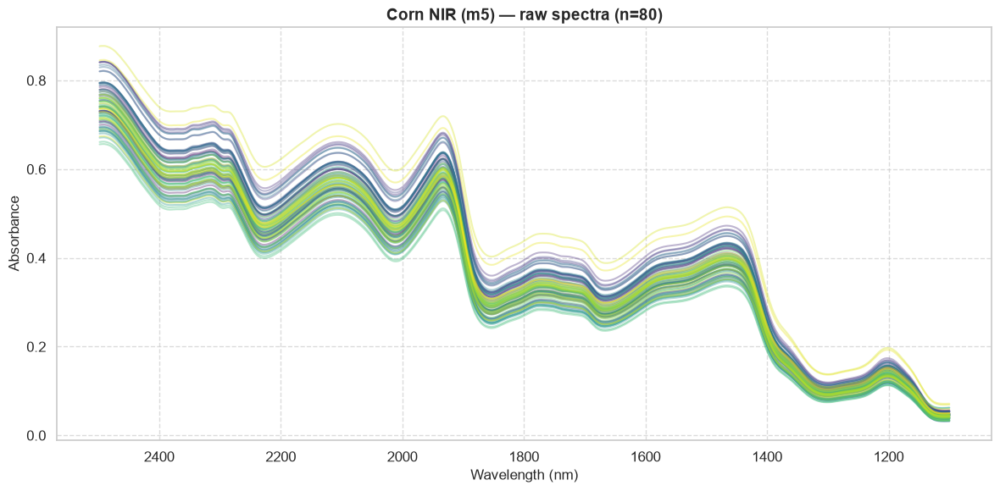
3. Load tracked optimal preprocessing (from full benchmark)#
Run once from the repo root:
python examples/run_corn_benchmark.py
This writes examples/corn_results/optimal_pipelines.json with per-fold chains, consensus pipelines, and nested-CV metrics for every constituent.
[3]:
results_path = EXAMPLES / "corn_results" / "optimal_pipelines.json"
if results_path.exists():
summary = json.loads(results_path.read_text())
print("Protocol:", json.dumps(summary["protocol"], indent=2))
print("\nConsensus optimal preprocessing per constituent:")
for name, block in summary["constituents"].items():
chain = " → ".join(block["consensus_pipeline"])
spx = block["spectoprep"]
print(f" {name:9s}: {chain}")
print(f" R²={spx['r2']:.3f}, RMSE={spx['rmse']:.4f}, RPD={spx['rpd']:.1f}")
print(f" fold chains: {block['fold_pipelines']}")
else:
summary = None
print(f"No precomputed results at {results_path}")
print("Run: python examples/run_corn_benchmark.py")
Protocol: {
"instrument": "m5",
"outer_cv": "KFold(n_splits=5, shuffle=True, random_state=42)",
"inner_cv": "group_kfold n_splits=3",
"init_points": 10,
"n_iter": 25,
"evaluations_per_outer_fold": 35,
"preprocessing_steps": [
"snv",
"msc",
"savgol",
"detrend",
"scaler",
"robust_scaler",
"meancn"
]
}
Consensus optimal preprocessing per constituent:
Moisture : savgol → scaler
R²=1.000, RMSE=0.0081, RPD=46.7
fold chains: [['savgol', 'scaler'], ['savgol', 'scaler'], ['scaler'], ['scaler'], ['savgol', 'scaler']]
Oil : savgol → scaler
R²=0.976, RMSE=0.0274, RPD=6.5
fold chains: [['savgol', 'scaler'], ['savgol', 'scaler'], ['savgol', 'scaler'], ['detrend', 'robust_scaler'], ['savgol', 'scaler']]
Protein : msc → scaler
R²=0.963, RMSE=0.0949, RPD=5.3
fold chains: [['msc', 'scaler'], ['snv', 'scaler'], ['robust_scaler', 'meancn'], ['robust_scaler'], ['savgol', 'scaler']]
Starch : savgol → scaler
R²=0.989, RMSE=0.0841, RPD=9.8
fold chains: [['savgol', 'scaler'], ['savgol', 'scaler'], ['savgol', 'scaler'], ['scaler'], ['savgol', 'scaler']]
4. Short live demo on one constituent (Protein)#
A reduced search for interactive use. For paper numbers use the precomputed nested-CV results.
[4]:
component = "Protein"
y = Y[:, COMPONENTS.index(component)]
groups = np.arange(len(y))
# Hold out 25% for a quick illustration (not the nested-CV paper protocol)
from sklearn.model_selection import GroupShuffleSplit
tr, te = next(GroupShuffleSplit(n_splits=1, test_size=0.25, random_state=21).split(X, y, groups))
opt = PipelineOptimizer(
X_train=X[tr], y_train=y[tr],
X_test=X[te], y_test=y[te],
groups=groups[tr],
preprocessing_steps=["snv", "msc", "savgol", "detrend", "scaler", "robust_scaler", "meancn"],
cv_method="group_kfold",
n_splits=3,
max_pipeline_length=2,
allowed_preprocess_combinations=[1, 2],
random_state=42,
log_level="WARNING",
)
best_params, best_pipeline = opt.bayesian_optimize(init_points=5, n_iter=15)
preds, rmse, r2 = opt.get_best_pipeline_predictions(best_pipeline)
print("Selected:", " → ".join(s for s, _ in best_pipeline.steps[:-1]))
print(f"Held-out {component}: RMSE={rmse:.4f}, R²={r2:.4f}")
| iter | target | als_lam | als_p | als_niter | savgol... | savgol... | savgol... | detren... | detren... | emsc_o... | global... | lsnv_win | rnv_lp | rnv_up | pca_n_... | rs_qua... | rs_qua... | rs_wit... | rs_wit... | minmax... | minmax... | power_... | power_... | quanti... | quanti... | ica_n_... | kpca_n... | kpca_k... | kpca_g... | lle_n_... | lle_n_... | skb_k | fa_n_c... | fa_lin... | rbf_n_... | rbf_gamma | pipeli... |
-------------------------------------------------------------------------------------------------------------------------------------------------------------------------------------------------------------------------------------------------------------------------------------------------------------------------------------------------------------------------------------------------------------------------------------------------------------------------
| 1 | -0.217823 | 37516.557 | 0.2857071 | 39.279757 | 10.591950 | 1.6240745 | 0.4679835 | 0.0580836 | 4.4647045 | 3.4044600 | 7.3726532 | 7.1235069 | 19.548647 | 90.811066 | 22.809232 | 7.7273745 | 74.585112 | 0.3042422 | 0.5247564 | 0.1727780 | 0.7164916 | 0.6118528 | 0.1394938 | 65.507483 | 0.3663618 | 23.891359 | 39.688446 | 0.7966983 | 5.1428301 | 18.587607 | 6.1612603 | 61.539395 | 18.711364 | 0.1945042 | 190.28825 | 0.9656664 | 20.209933 |
| 2 | -0.118387 | 30530.915 | 0.0383249 | 37.369321 | 9.6409149 | 1.4881529 | 1.4855307 | 0.0343885 | 4.6372816 | 2.0351199 | 6.9627005 | 8.8702664 | 12.801020 | 83.667756 | 20.115736 | 19.543769 | 89.378320 | 0.9394989 | 0.8948273 | 0.2391599 | 0.9687496 | 0.0884925 | 0.1959828 | 18.593184 | 0.3253303 | 20.656509 | 15.024753 | 3.3066626 | 3.5681765 | 9.8661662 | 18.567402 | 15.810574 | 80.615304 | 0.2229064 | 197.50851 | 0.7724725 | 4.9678920 |
| 3 | -0.217784 | 651.65950 | 0.2464838 | 38.274293 | 11.374043 | 4.0850813 | 0.2221339 | 0.3584657 | 1.4634762 | 4.4524137 | 6.6096831 | 8.9853881 | 5.9533752 | 77.774558 | 33.867965 | 15.944092 | 85.938936 | 0.8872127 | 0.4722149 | 0.0478376 | 0.8852979 | 0.7607850 | 0.5612771 | 156.48376 | 0.4937955 | 27.091175 | 22.521968 | 0.1014223 | 1.0798063 | 2.8800171 | 20.910260 | 32.806886 | 51.839927 | 2.7136237 | 57.365523 | 0.4109725 | 18.888778 |
| 4 | -0.128378 | 22956.936 | 0.0323241 | 21.590058 | 7.9673277 | 4.7187906 | 2.4243611 | 0.6334037 | 4.4858423 | 4.2146883 | 2.6791305 | 12.355353 | 13.090133 | 90.186003 | 89.816947 | 9.7700521 | 72.751298 | 0.2279351 | 0.4271077 | 0.3272059 | 0.9442922 | 0.0069521 | 0.5107473 | 89.308090 | 0.2221078 | 7.7535376 | 18.205528 | 3.7622097 | 3.2327061 | 16.526137 | 22.575473 | 37.635701 | 97.234644 | 2.8777174 | 57.838636 | 0.4977512 | 7.5219577 |
| 5 | -0.212147 | 28555.565 | 0.0206972 | 34.382573 | 10.016074 | 1.2059150 | 0.8359393 | 0.9082658 | 1.9582475 | 1.5795794 | 5.4050748 | 12.913902 | 8.6308290 | 86.803388 | 76.638722 | 8.5645631 | 88.205408 | 0.3677831 | 0.6323058 | 0.2534118 | 0.8143098 | 0.0902897 | 0.8353024 | 70.948212 | 0.1865185 | 3.9572067 | 30.362861 | 2.7034818 | 0.1668617 | 16.338605 | 10.662394 | 65.226933 | 19.087910 | 2.0659038 | 83.479715 | 0.9367932 | 3.4380236 |
| 6 | -0.133692 | 66032.406 | 0.1534903 | 19.372764 | 9.3918661 | 4.8684740 | 2.1052207 | 0.8475333 | 4.0728043 | 1.3122712 | 8.4906219 | 11.316496 | 14.718317 | 75.721621 | 22.234906 | 12.681580 | 86.114857 | 0.0073249 | 0.9438948 | 0.1130865 | 0.7581971 | 0.8603996 | 0.4619540 | 129.39196 | 0.9200338 | 40.379079 | 41.101876 | 3.9245586 | 7.4256003 | 9.3097008 | 25.137096 | 4.1787315 | 89.810840 | 1.7464904 | 91.333266 | 0.8952873 | 11.393923 |
| 7 | -0.479819 | 70264.575 | 0.1463862 | 16.222442 | 8.2036242 | 1.5677439 | 1.3177253 | 0.1534522 | 2.2505267 | 2.5206960 | 8.3861071 | 8.5491592 | 5.7405904 | 81.743264 | 84.070102 | 10.661843 | 77.253459 | 0.4770757 | 0.3484341 | 0.2824022 | 0.6217481 | 0.0627184 | 0.7140648 | 101.59952 | 0.2117297 | 20.560554 | 48.555231 | 1.4943151 | 1.1619394 | 10.747585 | 18.474039 | 75.535467 | 11.910267 | 1.0707840 | 71.585879 | 0.4952237 | 19.129795 |
| 8 | -0.116378 | 30255.620 | 0.2078776 | 20.646936 | 10.395735 | 2.4424105 | 1.1708515 | 0.2545387 | 4.2555948 | 3.2308449 | 9.7117614 | 11.854586 | 17.375487 | 86.498441 | 32.554271 | 8.0206022 | 81.123641 | 0.1590969 | 0.8967316 | 0.2602615 | 0.8541911 | 0.3040710 | 0.9573846 | 61.416979 | 0.8776918 | 18.085969 | 19.870667 | 2.9908825 | 2.1974843 | 28.868375 | 21.369140 | 43.048389 | 18.566889 | 1.4495027 | 11.240390 | 0.6687759 | 5.4659455 |
| 9 | -0.133692 | 63166.388 | 0.2254054 | 20.414514 | 12.944674 | 4.4730258 | 2.0523634 | 0.1406309 | 4.8948974 | 3.7789288 | 1.3503626 | 11.662062 | 10.169010 | 90.890475 | 48.929198 | 11.856951 | 75.858269 | 0.7269129 | 0.0416676 | 0.3666146 | 0.8896728 | 0.0663736 | 0.4501872 | 121.64718 | 0.5595609 | 49.031365 | 23.924664 | 2.7865018 | 8.7806490 | 19.962372 | 12.410468 | 30.918473 | 83.437837 | 2.9057455 | 86.092320 | 0.3777884 | 0.2402107 |
| 10 | -0.222945 | 19640.009 | 0.0763061 | 14.569465 | 11.676909 | 3.0724912 | 0.7563927 | 0.5905502 | 4.3750800 | 2.8987283 | 8.1513438 | 11.492509 | 5.7816673 | 94.793112 | 34.031187 | 6.5086621 | 73.489322 | 0.9293617 | 0.4101538 | 0.3768426 | 0.6296622 | 0.3815917 | 0.5025715 | 93.598820 | 0.5548082 | 24.811948 | 29.493619 | 0.4969284 | 3.6725918 | 10.717578 | 12.700836 | 54.285955 | 58.703727 | 0.6551990 | 108.92615 | 0.5881437 | 15.336230 |
| 11 | -0.222945 | 59602.447 | 0.1832453 | 49.463679 | 8.2334226 | 4.4238812 | 2.2461747 | 0.4777150 | 3.2782620 | 3.8857995 | 7.9423397 | 10.299408 | 5.1100770 | 80.473942 | 60.186141 | 5.9705777 | 81.622374 | 0.2823952 | 0.3919237 | 0.0836329 | 0.6376727 | 0.5038182 | 0.4492115 | 177.25364 | 0.7067916 | 2.7935243 | 47.280192 | 1.2864158 | 0.9097892 | 4.9070376 | 24.963034 | 32.202929 | 89.690925 | 1.8400320 | 124.49223 | 0.0907908 | 16.209967 |
| 12 | -0.218389 | 33547.968 | 0.1095620 | 11.680600 | 7.2253497 | 3.0368190 | 0.4716593 | 0.1165907 | 2.8556461 | 3.9288370 | 7.0239785 | 9.9247705 | 14.872598 | 75.546669 | 39.400834 | 16.873785 | 94.523525 | 0.9756331 | 0.0448076 | 0.0909731 | 0.6887614 | 0.6360788 | 0.4189552 | 146.13385 | 0.1297976 | 16.498289 | 28.274270 | 0.4196946 | 8.6579173 | 18.215067 | 24.569194 | 84.319034 | 33.521211 | 0.5868825 | 22.040107 | 0.0895692 | 3.4542642 |
| 13 | -0.218389 | 99970.336 | 0.0684110 | 38.410683 | 12.225564 | 2.8283313 | 2.7041512 | 0.4092512 | 2.6940452 | 2.9556176 | 2.0581045 | 8.8564253 | 10.562342 | 70.173493 | 93.349975 | 8.3486594 | 77.975566 | 0.9098714 | 0.4871407 | 0.0842631 | 0.6126203 | 0.4941220 | 0.0568056 | 104.46717 | 0.4120169 | 6.3569595 | 26.154265 | 1.6964551 | 1.9613560 | 18.478447 | 25.772682 | 82.973653 | 46.574852 | 0.1495457 | 72.456104 | 0.0656576 | 21.932391 |
| 14 | -0.262608 | 86428.568 | 0.1577471 | 30.440472 | 10.633251 | 3.2658044 | 1.4563159 | 0.9882111 | 3.5252109 | 3.1170395 | 7.3365793 | 8.4067481 | 14.439205 | 80.123382 | 2.1020309 | 12.089221 | 75.105098 | 0.0390499 | 0.4673099 | 0.1152725 | 0.8164006 | 0.8247846 | 0.7678178 | 80.125451 | 0.5743550 | 40.921831 | 32.830801 | 3.4530926 | 6.0566813 | 16.727146 | 8.4435830 | 29.724119 | 24.043129 | 0.6214628 | 166.74771 | 0.3605150 | 22.638273 |
| 15 | -0.510213 | 24925.247 | 0.1537918 | 16.386417 | 9.3572460 | 2.0143380 | 2.6283959 | 0.6604568 | 3.5835486 | 4.1217734 | 5.3574456 | 11.373255 | 14.678420 | 74.351807 | 11.711918 | 10.768553 | 75.128909 | 0.1600187 | 0.5786991 | 0.0682854 | 0.9733103 | 0.1864013 | 0.3722317 | 161.90759 | 0.9266349 | 19.459947 | 15.913698 | 2.0147887 | 6.6510915 | 18.453931 | 13.707465 | 91.793080 | 41.277091 | 2.9380205 | 188.92003 | 0.8420262 | 17.363855 |
| 16 | -0.222945 | 63404.671 | 0.0906472 | 31.113466 | 7.8370713 | 2.1935791 | 2.6824965 | 0.3416511 | 3.3423515 | 3.9308123 | 9.4276512 | 12.562236 | 12.408471 | 86.499601 | 61.127291 | 11.815775 | 82.620215 | 0.2070783 | 0.8623520 | 0.1973593 | 0.7000909 | 0.1608821 | 0.5653638 | 93.256152 | 0.1741060 | 5.6206504 | 11.536676 | 0.3432272 | 8.7461865 | 8.7061208 | 26.824351 | 52.632089 | 65.559237 | 2.6969423 | 12.423571 | 0.9213772 | 16.189062 |
| 17 | -0.480268 | 3566.3959 | 0.2473885 | 20.105816 | 12.599757 | 2.1451067 | 1.1834892 | 0.1606253 | 2.1338226 | 1.1895565 | 7.8452337 | 12.350337 | 5.4988647 | 77.856763 | 88.443560 | 17.183340 | 85.008691 | 0.4480438 | 0.8753708 | 0.2023456 | 0.9354244 | 0.2463339 | 0.9898504 | 157.49822 | 0.1367838 | 6.0409187 | 35.170552 | 0.2254529 | 3.3654175 | 4.5905862 | 27.521872 | 76.469037 | 65.544461 | 2.1390455 | 112.43511 | 0.7276474 | 17.084816 |
| 18 | -0.218389 | 62461.271 | 0.0415871 | 30.000933 | 12.074756 | 3.1853828 | 1.3552415 | 0.0095921 | 3.6422835 | 4.5941490 | 5.3442416 | 12.059416 | 8.9477956 | 78.185604 | 81.857516 | 12.794667 | 90.873993 | 0.4482622 | 0.3135758 | 0.3314388 | 0.8200934 | 0.0978463 | 0.3567129 | 99.208866 | 0.4476656 | 33.139619 | 22.802518 | 1.7528271 | 6.9910649 | 10.115277 | 12.394696 | 82.953963 | 5.7825902 | 1.6861761 | 196.06156 | 0.1972338 | 22.724267 |
| 19 | -0.509043 | 31983.253 | 0.1714929 | 29.223740 | 11.739988 | 3.7990912 | 1.6504482 | 0.9267783 | 2.7855197 | 4.1119995 | 4.0538643 | 9.6699210 | 16.908290 | 84.557237 | 46.688427 | 5.7621047 | 86.566238 | 0.9876870 | 0.5551083 | 0.1060758 | 0.7939727 | 0.9850980 | 0.0138236 | 73.074955 | 0.2476467 | 14.872908 | 19.951674 | 0.4854120 | 1.9419565 | 12.388767 | 20.639497 | 59.867959 | 59.014550 | 1.3477162 | 70.952052 | 0.0481024 | 11.846206 |
| 20 | -0.217795 | 67663.839 | 0.2706704 | 19.983499 | 10.462850 | 3.7987775 | 2.6595255 | 0.6373258 | 4.0388613 | 1.9763193 | 7.1509102 | 11.131235 | 6.7357542 | 73.419121 | 75.620057 | 9.7867752 | 89.561942 | 0.2325495 | 0.1715793 | 0.1290947 | 0.9586915 | 0.0729940 | 0.6183777 | 141.98301 | 0.9000498 | 41.442534 | 38.009221 | 1.6558564 | 5.0187019 | 25.183411 | 22.216205 | 75.685320 | 5.7018358 | 0.0547500 | 112.07361 | 0.7734399 | 24.630730 |
=========================================================================================================================================================================================================================================================================================================================================================================================================================================================================
Selected: robust_scaler
Held-out Protein: RMSE=0.0995, R²=0.9536
5. Preprocessing comparison — full spectra, inverted x-axis#
[5]:
from sklearn.pipeline import Pipeline
prep = Pipeline(best_pipeline.steps[:-1])
X_prep = np.asarray(prep.fit_transform(X))
chain = " → ".join(s for s, _ in best_pipeline.steps[:-1])
SpectroPrepPlotter.plot_preprocessing_comparison(
wavelengths,
X,
{f"Optimal preprocessing ({chain})": X_prep},
sample_indices=None, # all 80 spectra
title=f"Corn NIR (m5) — {component}: raw vs preprocessing",
xlabel="Wavelength (nm)",
alpha=0.3,
invert_xaxis=True,
figsize=(12, 8),
)
plt.show()
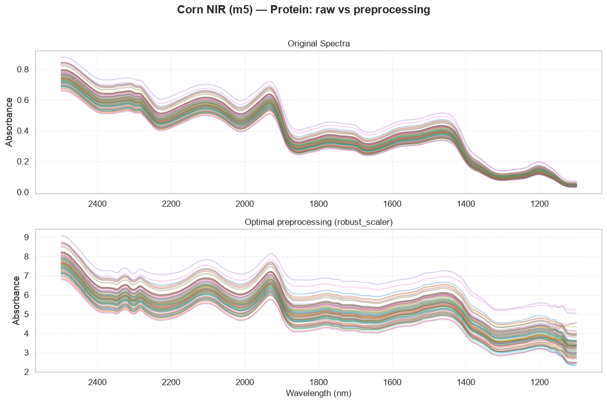
6. Predicted vs reference + optimisation diagnostics#
[6]:
SpectroPrepPlotter.plot_prediction_scatter(
y[te], preds,
title=f"Corn NIR (m5) — {component} (held-out demo)",
xlabel=f"Reference {component}",
ylabel=f"Predicted {component}",
)
SpectroPrepPlotter.plot_optimization_progress(opt)
SpectroPrepPlotter.plot_optimization_results(opt, top_n=5)
plt.show()
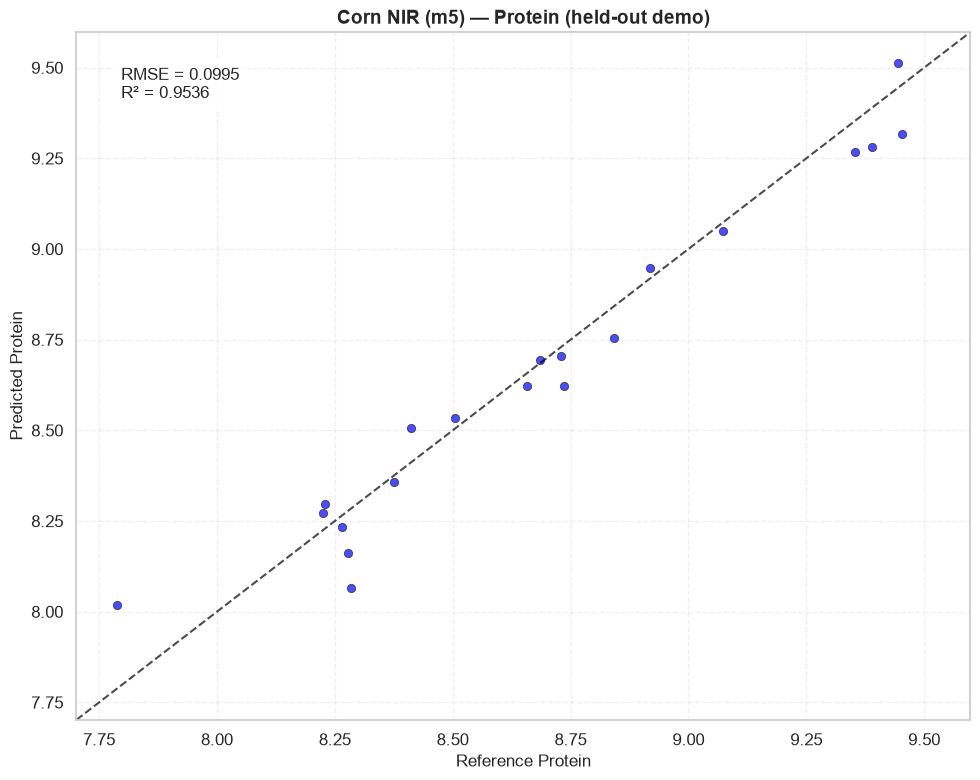
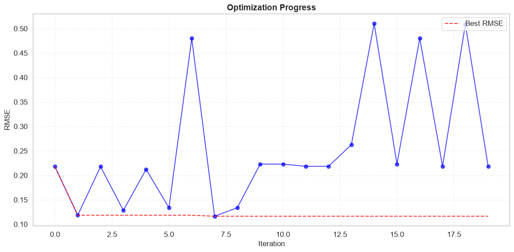
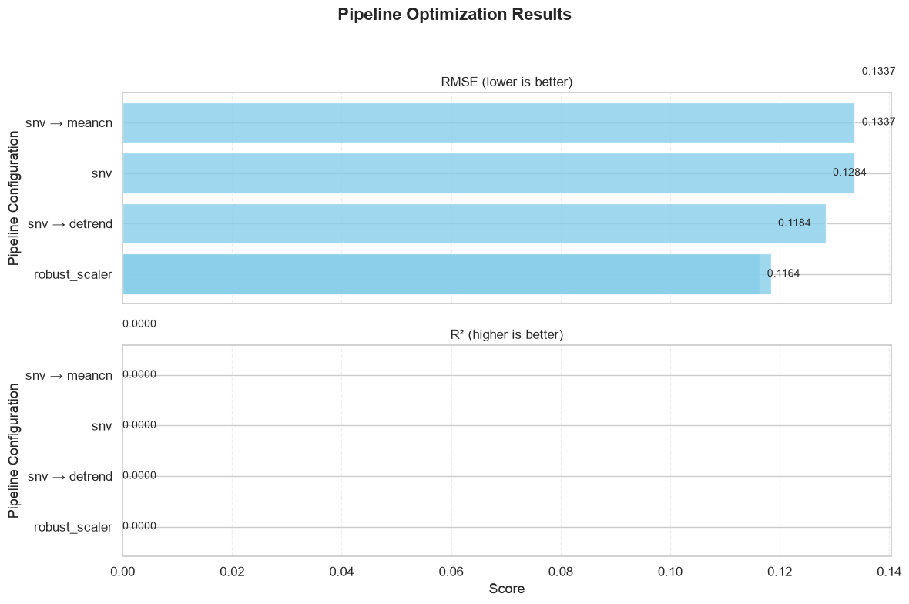
7. Paper figures (nested-CV, all constituents)#
If run_corn_benchmark.py has been executed, display the saved prediction and preprocessing figures for every constituent.
[7]:
from IPython.display import Image, display, Markdown
fig_dir = EXAMPLES / "corn_results" / "figures"
if fig_dir.exists():
display(Markdown("### Raw spectra"))
display(Image(filename=str(fig_dir / "spectra_raw_full.png")))
for name in COMPONENTS:
display(Markdown(f"### {name}"))
pred = fig_dir / f"prediction_{name.lower()}.png"
prep = fig_dir / f"spectra_prep_{name.lower()}.png"
if pred.exists():
display(Image(filename=str(pred)))
if prep.exists():
display(Image(filename=str(prep)))
else:
print("Figures not found — run examples/run_corn_benchmark.py first.")
Raw spectra#
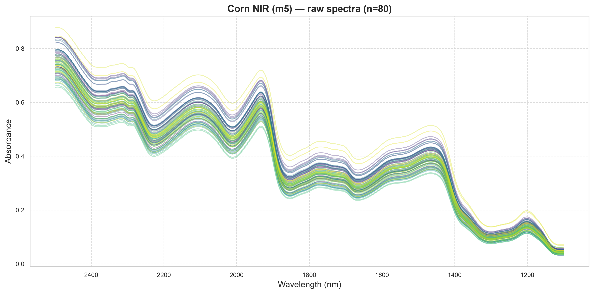
Moisture#
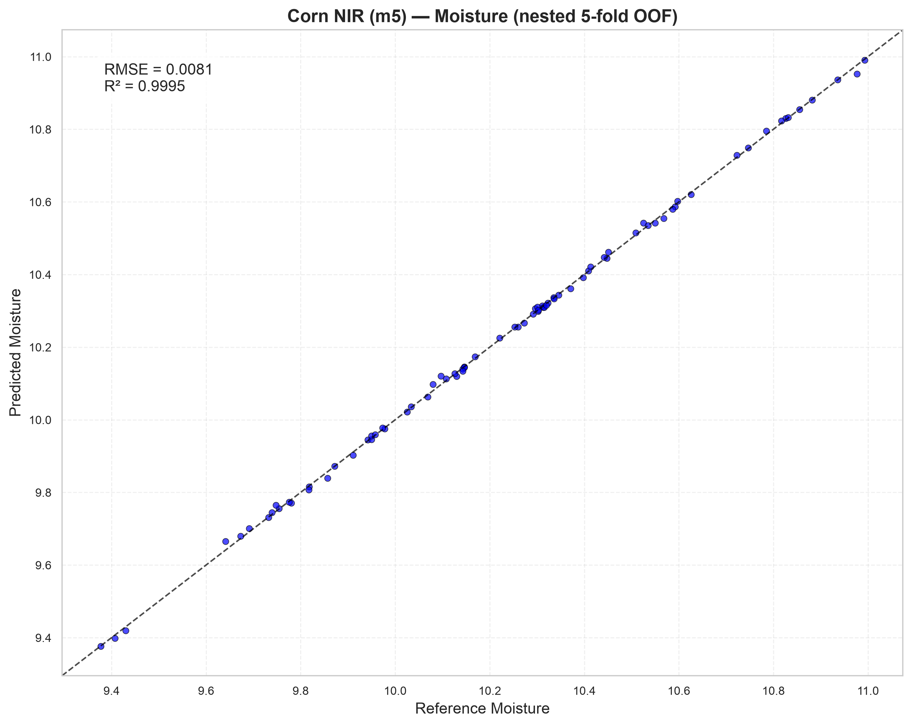
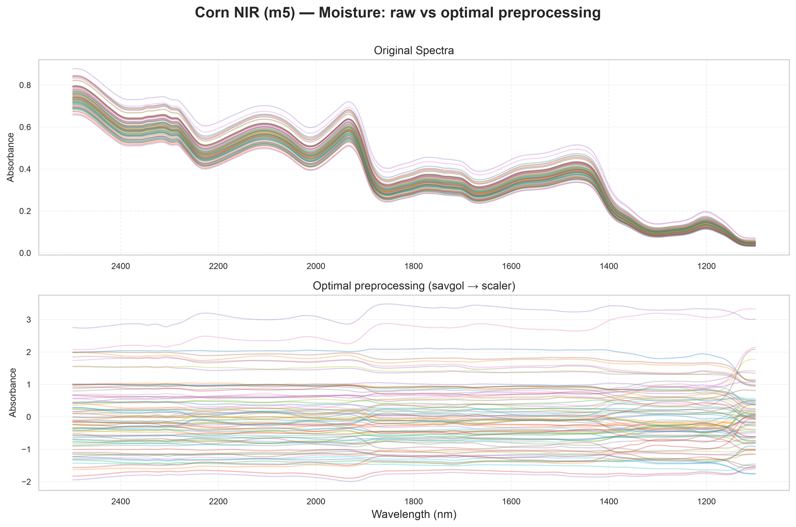
Oil#
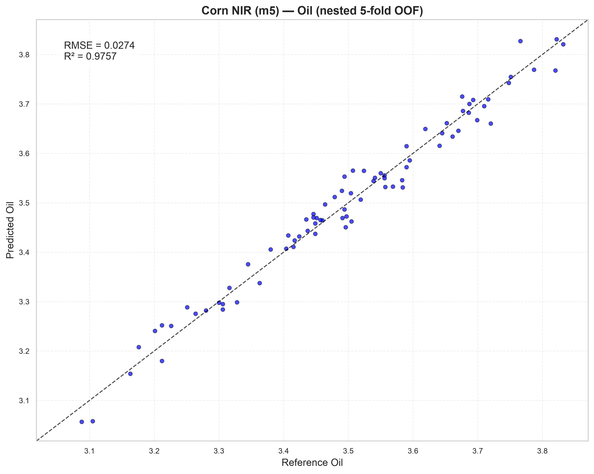
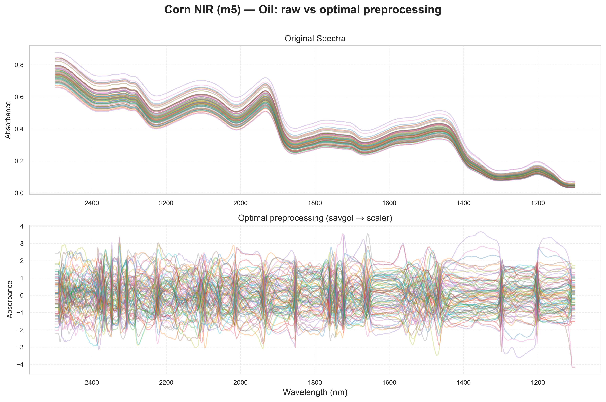
Protein#
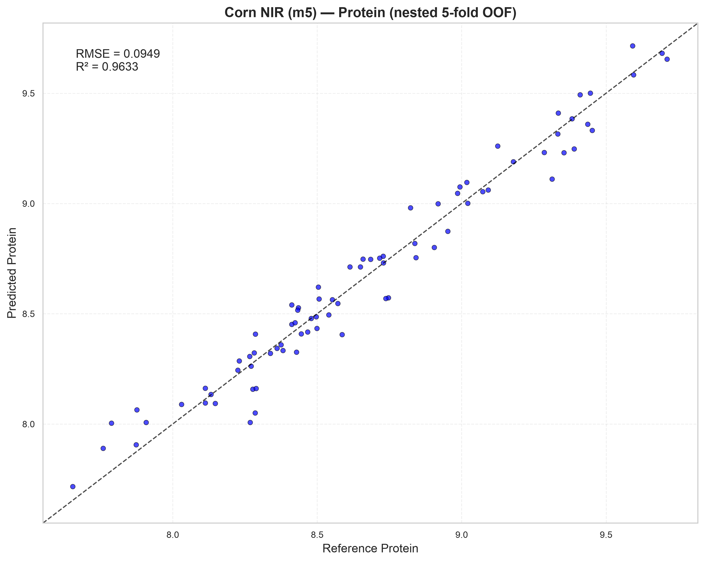
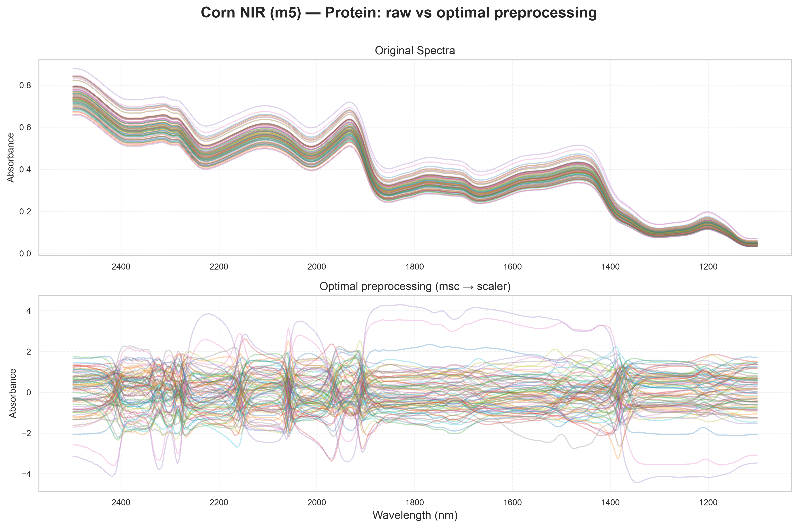
Starch#
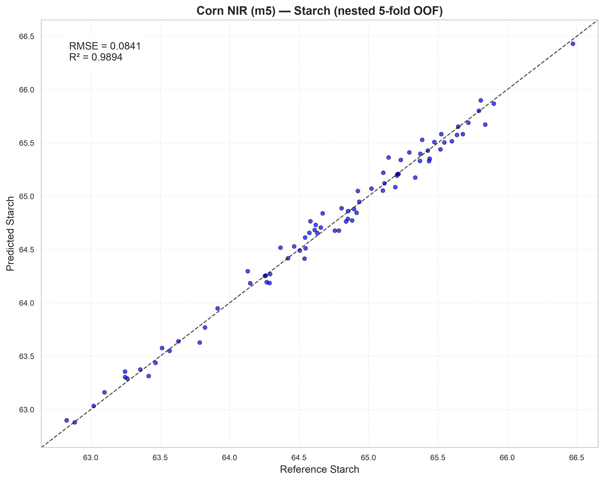
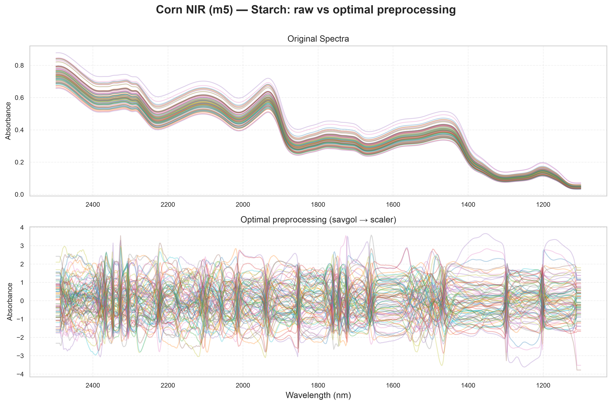